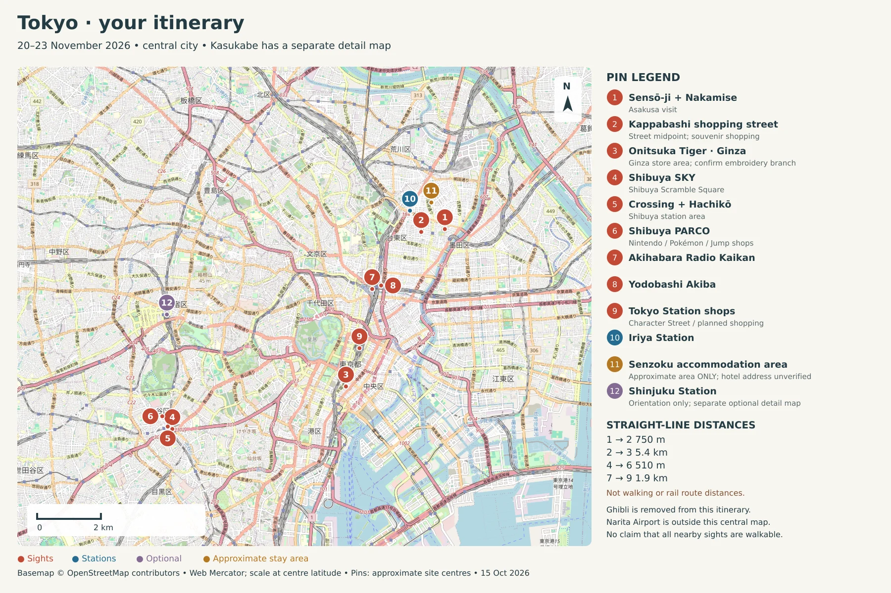

Stays near Kyoto
23–25 November 2026 · 2 nights · 2 adults · 1 room.
Double bed · private bathroom · meals optional · prices for both of you.
Hotel prices & booking links
Lowest checked offer per hotelCheapest: Smile Seta. All listed offers exceed your INR ₹6,500/night budget.
Swipe for prices and conditions →
| Hotel / booking link | 2-night total | Average / night | Fees & booking conditions |
|---|---|---|---|
| Smile Hotel Ōtsu Seta ↗Ōtsu · Official · new-member rateNon-smoking double · 140 cm bed · 15 m² JR Seta · 1 min walk Booking.com 7.1/10 | INR ₹15,397.26JPY ¥25,700 | INR ₹7,698.63JPY ¥12,850 |
|
| APA Hotel Biwako Seta Ekimae ↗Ōtsu · Booking.com · Partner OfferNon-smoking double JR Seta · 1 min walk Booking.com 7.6/10 | INR ₹18,592.38JPY ≈¥31,033 | INR ₹9,296.19JPY ≈¥15,517 |
|
| le Lac HOTEL Ōtsu Ishiyama ↗Ōtsu · Booking.com · Partner OfferNon-smoking small double · 15 m² JR Ishiyama · ~150 m (listing) Booking.com 7.6/10 | INR ₹22,438.82JPY ≈¥37,453 | INR ₹11,219.41JPY ≈¥18,727 |
|
| Daido Garden Hotel Kyoto ↗Kyoto · Booking.com · Partner OfferDouble · smoking status unconfirmed Keihan Fujinomori · 8–10 min walk Booking.com 8.0/10 | INR ₹26,153.13 est.JPY ≈¥43,653 | INR ₹13,076.57 est.JPY ≈¥21,826 |
|
| COCORO HOTEL Kyoto ↗Kyoto · Booking.com · Genius sign-in priceNon-smoking double · 20 m² · kitchenette Misasagi subway · outside hotel Booking.com 8.1/10 | INR ₹27,918.77JPY ¥46,600 | INR ₹13,959.39JPY ¥23,300 |
|
| APA Hotel Kyoto Ekikita ↗Kyoto · Booking.com · Partner OfferNon-smoking double Kyoto Station central exit · ~5 min walk Booking.com 8.4/10 | INR ₹33,499.52 est.JPY ≈¥55,915 | INR ₹16,749.76 est.JPY ≈¥27,957 |
|
Hotel names open dated offers; select the listed room/rate. Prices can change. est. = total with provisional city tax; confirm before paying. No separate cleaning fee shown for these rooms.
Price notes & alternatives
- Smile without membership: Booking.com partner — INR ₹15,494.92 total / ₹7,747.46 nightly (JPY ≈¥25,863 total), taxes included. Pay now; no amendments; cancel free before 22 Nov JST. A Card is hotel loyalty membership, separate from AU ixigo.
- Kyoto: Daido = lower price, tax/smoking unconfirmed; COCORO = clearer fees + subway access; APA Ekikita = Kyoto Station access. COCORO without Genius: INR ≈₹30,914.35 total.
- Fees: Daido checkout includes INR ₹4,653.32 service + ₹2,923.75 tax. Kyoto’s provisional JPY ¥1,600 allowance = ¥400 × 2 adults × 2 nights; actual tax depends on nightly rates and prior collection. Tax rules.
- Currency: JPY ¥1 ≈ INR ₹0.59912. Converted figures are indicative; confirm payment currency. No cashback assumed.
- Coverage: Booking.com and Smile official checkout/cart checked. Agoda room offers did not load; Skyscanner required verification. Their headline prices are excluded; cheaper unverified offers may exist.
Station sources: Smile · APA Seta · Daido · COCORO · Quote details
Ōtsu → Kyoto routes
JR towards Kyoto: Seta → Ishiyama → Zeze → Ōtsu → Yamashina → Kyoto. Stay on one train; choose a service stopping at your station.
| Destination | Route |
|---|---|
| Kyoto Station / teamLab | JR hotel station → Kyoto → walk/taxi to teamLab. Seta → Kyoto: 17–20 min train ride; allow extra for walking. |
| Higashiyama / Sanjō / Gion | JR → Yamashina → Tozai subway westbound → Higashiyama / Sanjo Keihan. Gion: walk south from Sanjō or Keihan one stop to Gion-Shijō. |
| Central Kyoto from Hama-Ōtsu | Biwako-Hamaōtsu / Kamisakaemachi → Keishin–Tozai through service → Sanjo Keihan. ~25 min from Hama-Ōtsu; no change. Check destination for farther-west stops. |
| Fushimi Inari / Arashiyama | JR → Kyoto → Nara Line local to Inari, or Sagano Line to Saga-Arashiyama. |
- Kyoto Station: southern central Kyoto; Shijō is two subway stops away.
- Station choice: JR Ōtsu shortens the Kyoto Station commute; Hama-Ōtsu favours direct Sanjō access.
Sources: Ōtsu access · Seta access · Rail map
Itinerary maps
Pins, legends & scales · itinerary as of 15 Oct. Distances are straight-line. Shinjuku is optional.

Pin-to-pin distance
Pin legend
Approximate pins, not hotel entrances or travel routes. Map © OpenStreetMap contributors. Map data.